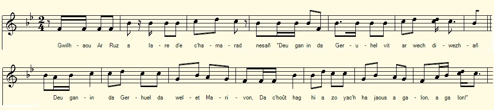

Gwilhaou ha Marivon
Guillot et Maryvonne
Guillot and Maryvonne
Chant collecté par Théodore Hersart de La Villemarqué
dans le 2ème Carnet de Keransquer (pp. 140 - 141).

Mélodie: "Mariage manqué"
Arrangement Christian Souchon (c) 2020
|
A propos de la mélodie: Inconnue. Remplacé par "Mariage manqué", F. Cadic, "Paroisse bretonne de Paris, novembre 1911. A propos du texte La page 140 est particulièrement illisible. Il semble qu'il s'agisse d'une "son" anecdotique au sujet d'un frère et d'une soeur, tous deux orphelins, Guillaume et Yvonne. Le frère soutien de famille doit partir pour trois mois en Normandie. Il ne semble pas que l'original soit plus lisible que la copie mise en ligne en novembre 2018. La première strophe se retrouve sous une forme assez peu différente en introduction de la gwerz Thomaz an Douz, notée pp. 213-215 du même carnet. |
About the tune Unknown. Replaced with "A failed wedding", F. Cadic, "Paroisse bretonne de Paris, November 1911. About the lyrics Page 140 is particularly illegible. It seems to be an anecdotal "son" about a brother and sister, both orphans, Guillaume and Yvonne. Guillot, the breadwinner must leave for Normandy for three months. It does not seem that the original is more readable than the copy posted online in November 2018. The first stanza, in a somewhat different form, provides the introduction to the gwerz Thomaz an Douz , recorded on pp. 213-215 in the same copybook. |
|
DORNSKRID p. 140 1. Entre Montré...k (?) ha koat tre ar braden A zo eostik bihan kano war ann derwen, Kano are hen ken douz, kano din noz ha dé Ken a lak laouen a kalon kalon à nep hen glev. 2. Guillaou ar Rous a laré dhe c'hamarad nesan: Deu ganin da geruhel, vit ar vech divezan, Deu ganin da geruhel d'a welet marivon Da chout hag hi a zo iarc'h ha joaus a galon. - 3. Ann [?] barz an ti, [ ?] ha laret dan den yaouank [ ?] - Mar d'o-chwi a zo tud a maj ch du [ ?] Chwi a lar keno [ ?] atav er ger-mañ 4. Chetu [ ?] piv a fecht Homan.zo nep a . zeu p'a hallogas[?] Kriz vije ar galon eno na c'huanaat [?] Pa an dud.... ne chladet[?] 5. War wi he vamm he dad Ha Doue ar .bvhathad.. [?] Tud ar chahtk homan zo kalonad. Paneve d'am c'hoarig minorez em ti gara Ne n'e nemet tri miz, hi kaon[?] na ye 6. Dezhi mago ha d'hen distrujit [?] Gwela ra atav en tu Sant Brieg Ha me a wel al les ti me mamm ha me zat Elec'h out bet maget, ec'h oufe ervat p. 141 / 75 7. Guillaouik a lare un deiz en Normandi: - Me glev ma c'hoar minorez er ger o ouelañ din ; Me glev, er ger o welañ tand 'met tri miz, - |
BREZHONEK p. 140 1. Etre Montrejudek (?) ha Koad Tre-ar-Bradenn A zo 'n eostik bihan 'kanañ war un dervenn, Kanañ ra eñ ken dous, kanañ ra noz ha deiz Ken a lak laouen kalon a nep hen glev. 2. Gwilhaou ar Rous lare de c'hamarad nesañ: - Deus ganin da Geruhel, vit ar wech diwezhañ; Deus ganin da Geruhel da welet Marivon Da chout hag hi a zo yac'h ha joaius a galon. - 3. Ann [?] barz an ti, [ ?] ha laret dan den yaouank [ ?] - Mar d'o-chwi a zo tud a maj ch du [ ?] Chwi a lar keno [ ?] atav er ger-mañ 4. Chetu [ ?] piv a fecht Homan.zo nep a . zeu p'a hallogas[?] Kriz vije ar galon eno na c'huanaat [?] Pa an dud.... ne chladet[?] 5. War wi he vamm he dad Ha Doue ar .bvhathad.. [?] Tud ar chahtk homan zo kalonad. Paneve d'am c'hoarig minorez em ti gara Ne n'e nemet tri miz, hi kaon[?] na ye 6. Dezhi mago ha d'hen distrujit [?] Gwela ra atav en tu Sant Brieg Ha me a wel al lae ti ma mamm ha ma zad Elec'h out bet maget, ec'h oufe ervat p. 141 / 75 7. Guillaouik a lare un deiz en Normandi: - Me glev ma c'hoar minorez er ger o ouelañ din ; Me glev, er ger o welañ 'met tri miz, - KLT gant Christian Souchon |
TRADUCTION FRANCAISE p. 140 1. Entre Montréjudec et le bois de Bradenn Il est un rossignol qui chante sur un chêne, Et le chant est si doux qu'il chante jour et nuit Qu'il met du baume au coeur de ceux qui l'ont surpris. 2. Guillot le Roux disait à son meilleur ami: - Je vais à Keruhel. Veux-tu venir aussi?, Une dernière fois je veux voir Maryvonne Savoir si son humeur et sa santé sont bonnes. - 3. Le [?] dans la maison [ ?] Et a dit au jeune homme[ ?] - S'il est vrai que vous soyez des gens [ ?] Vous mettez ...adieu [ ?] 4. Ecout- [ ?] Notre arg... [?] Cher serait le coeur [?] Si les g...[?] 5. Sur vous, sa mère et son père (à lui)... [?] Des gens [ ?] elle a du chagrin. Si ce n'était pour ma soeur orpheline Dans trois mois tout au plus, j'irai... (?] 6. Pour la nourrir, il est revenu [?] La voir du côté de Saint-Brieuc Et je monterai chez mon père et ma mère Là où l'on t'a nourrie pour ton plus grand bien. p. 141 / 75 7. Guillot dans une ville de Normandie disait: - J'entends ma soeur orpheline qui pleure sur mon sort ; Je l'entends chez nous qui pleure depuis trois mois, - |
ENGLISH TRANSLATION p. 138 1. Between Montrejudec and Tréabradenn Wood There is a nightingale singing on top an oak, And the song is so sweet that it sings day and night. Its bring joy to the hearts of whoever hears it. 2. Guillot Leroux said to his best friend: - I'm going to Keruhel. Are you coming with me?, One last time I want to see Maryvonne And ask if she is in good mood and health. - 3. The [?] at home [?] And said to the young man [?] - If it is true that you are people [?] You put ... goodbye [?] 4. Listen - [?] Our money ... [?] Dear would be the heart [?] If the g ... [?] 5. On you, his mother and father ... [?] People [?] she is sad. If it weren't for my orphan sister In three months at the latest, I will go ... (?] 6. To feed her, he came back [?] Was seen in Saint-Brieuc And I will go up to my father and mother's Where you were fed and well fed. p. 141/75 7. Guillot in a town in Normandy said: - I hear my orphan sister crying over me; I have heard her crying for three months, - |